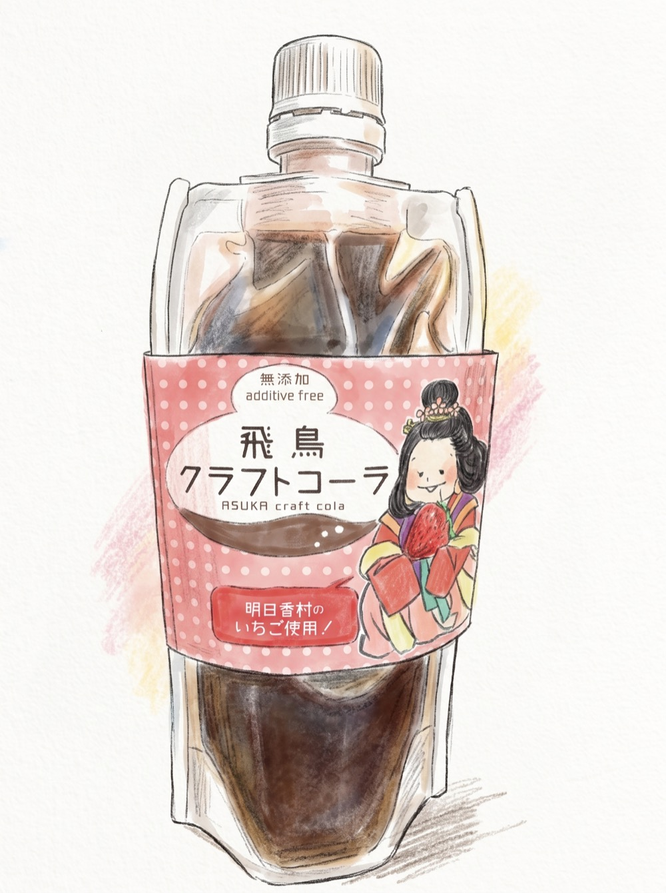
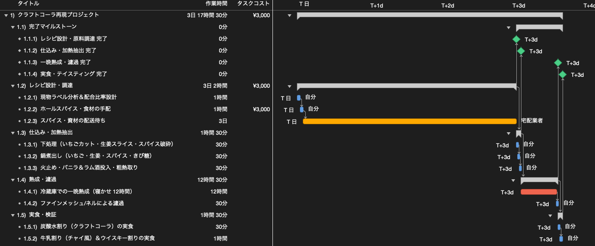

クラフトコーラを自宅で再現するWBSを作ってみた
今回は「WBSで覗いてみた」シリーズとして、「クラフトコーラを自宅で再現するWBS」を作成しました。
先日、奈良県明日香村を訪れた際に購入した『明日香クラフトコーラシロップ』がとても美味しかったため、この味を自宅で再現してみることを思い立ちました。現物の原材料表示ラベルを手がかりに配合を検討し、仕込み・煮出し、熟成、実食・検証に至る一連のプロセスをWBSに落とし込んでいます。
1. 目指すクラフトコーラとプロジェクトの終了条件
まずは、今回再現を目指すクラフトコーラの概要と、プロジェクトの終了条件を整理します。
題材とするのは、奈良県明日香村で販売されているクラフトコーラシロップです。パッケージには地域の歴史にちなんだイラストがあしらわれており、特産品を活かした風味が特徴です。

原材料表示を確認すると、きび糖をベースに、いちごや生姜、レモン果汁、シナモンやカルダモンなどのスパイス類、そして風味付けにラム酒が使われていることが分かります。
これらの素材をもとに、自宅で作る分量（シロップ約400〜500ml分）としてレシピの目安を組み立てました。
プロジェクトの終了条件（ゴール）は、調達した材料でシロップを作り、炭酸水や牛乳、ウイスキーで割って試飲し、味の再現度を確かめるところまでと設定しました。瓶やラベルの作成などは行わず、自宅の保存容器を使用します。作業は自分1名（スパイスの配送のみ宅配業者）で進める前提です。
2. WBSを作成する
設定した終了条件に向けて作業を洗い出し、タスク間の依存関係と所要期間を定義したガントチャートを作成しました。

工程は、「レシピ設計・調達」「仕込み・加熱抽出」「熟成・濾過」「実食・検証」の4つのフェーズに分かれています。
全体の所要期間は約4日〜5日間となりました。ただし、この大半はネット注文したスパイスの配送待ち（約3日）と、冷蔵庫での一晩熟成（12時間）が占めており、実際に自分で手を動かす実作業の工数は合計で4.5時間程度です。
3. プロジェクトのポイントと時間構造
作業のポイントとなるのは、煮出し後のシロップを冷蔵庫で寝かせる「一晩熟成（12時間）」です。加熱直後はスパイスや生姜の刺激が尖っていますが、時間を置くことで味が馴染むため、工程上動かせない待機時間となります。
こうした熟成時間や配送待ちといった夜間も継続する工程を正しく反映するため、本WBSでは稼働カレンダーを一般的な平日8時間ではなく「24時間稼働」として計算しています。
なお、費用についてはホールスパイス各種やいちご、生姜、レモン、ラム酒などの購入実費として約3,000円程度を見込んでいます。調理器具や保存容器は自宅にあるものを流用するため、追加の設備費用はかかりません。
終わりに
今回は、奈良県明日香村のクラフトコーラシロップを題材に、自宅での再現手順をWBSに分解してみました。
工程を整理してみることで、約3,000円の材料費と、実作業として半日弱（約4.5時間）の手間をかければ、配送や熟成を含めて4〜5日ほどでクラフトコーラが作れるという見通しが明確になりました。
自宅で手作りドリンクや料理を試す際、どれくらいの時間やコストがかかるのかを事前に把握する参考になれば幸いです。
なお、プロジェクト計画の基礎となるWBSの作り方や平準化の考え方について詳しく知りたい方は、「WBSの勘所」や「ガントチャートの決め手は平準化」もぜひ合わせてご覧ください。
最後までお読みいただきありがとうございました。